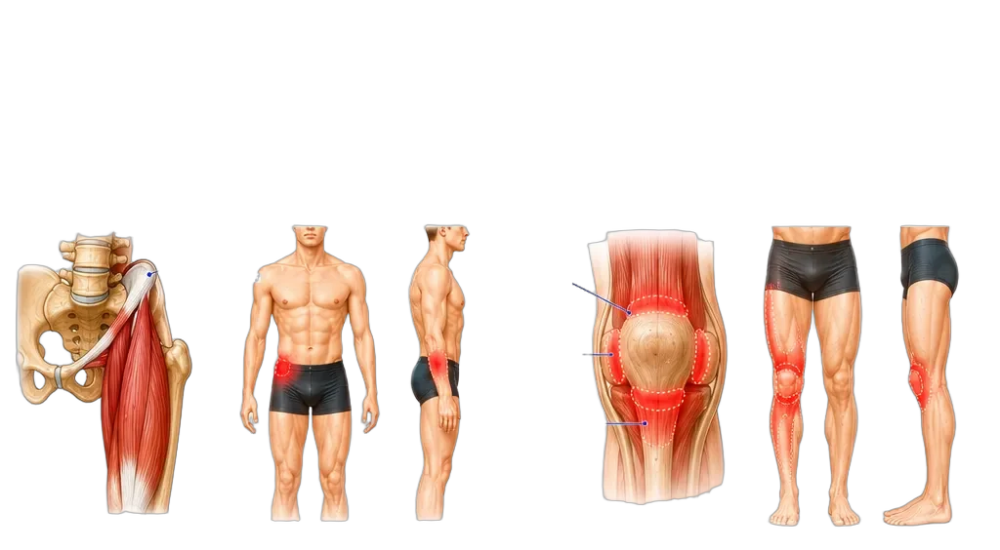
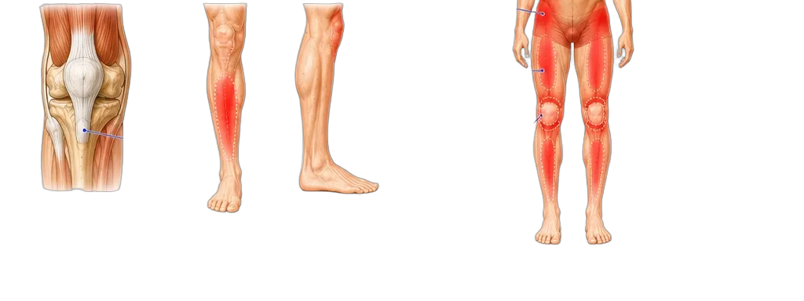

Tight Quads: Referred Pain
Anatomy · Attachments · Pain Patterns · Clinical Insights
Free Your Knees. Power Your Stride.
Anatomy · Attachments · Pain Patterns · Clinical Insights
Free Your Knees. Power Your Stride.
The quadriceps group (rectus femoris, vastus lateralis, vastus medialis, vastus intermedius) extends the knee and flexes the hip. Trigger points in these muscles cause anterior knee pain, thigh pain, and hip pain often misdiagnosed as joint pathology.


| Muscle | Origin | Insertion | Function |
|---|---|---|---|
| Rectus Femoris | AIIS | Tibial tuberosity | Knee extension + hip flexion |
| Vastus Lateralis | Greater trochanter, linea aspera | Tibial tuberosity | Knee extension |
| Vastus Medialis | Medial linea aspera | Tibial tuberosity | Knee extension, patellar tracking |
| Vastus Intermedius | Anterior femoral shaft | Tibial tuberosity | Knee extension |
| Muscle | Primary Pain Location | Radiation | Key Movement Pain |
|---|---|---|---|
| Rectus Femoris | Front of hip, kneecap | Hip → knee | Stairs, squats, hip flexion |
| Vastus Lateralis | Lateral thigh | Hip → lateral knee | Walking, running, lateral movements |
| Vastus Medialis | Medial knee | Inner thigh → knee | Stair descent, patellar loading |
| Vastus Intermedius | Front of thigh (deep) | Deep knee ache | Prolonged sitting → standing |